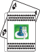

Typical serving comparisons and measurements:
- A medium size vegetable is about the size of a baseball (1 serving)
- A small apple or other fruit is about the size of a tennis ball (1 serving)
- 3 to 4 ounces of meat, fish, chicken or seafood is about the size of a deck of playing cards
 - Your fist is about 1 cup of food such as cut-up vegetables, cereal or pasta

- One ounce of cheese is about the size of a domino
- 1 tablespoon is about 1/2 of a ping pong ball
- 1 teaspoon is about the size of the tip of your thumb
(And, 3 teaspoons = 1 tablespoon)
- 1 ounces (oz) = 28.4 grams (g)
One drink (serving) of alcohol:
- 12 fluid ounces (oz) of regular beer (5% alcohol or less)
- 5 fluid oz of wine (12% alcohol)
- 1 – 1/2 oz of distilled spirits, 80 proof (40% alcohol)
Calories per gram:
- Fat – 9 cal/g
- Alcohol – 7 cal/g
- Carbohydrates (carbs) – 4 cal/g
- Protein – 4 cal/g
Food Group Single Serving Sizes
Fruits
1 medium fruit
1/2 cup fruit juice
1/2 cup canned, fresh or frozen fruit
1/4 cup dried fruit
Vegetables
1 cup raw leafy vegetables
1/2 cup vegetable juice
1/2 cup cut-up raw or cooked vegetables
Grains
1 slice of bread
1 oz of dry cereal
1/2 cup cooked cereal, pasta or rice
Meat, Fish, Poultry
3 to 4 ounces cooked
Dairy
1 cup of milk or yogurt
1-1/2 ounces of cheese